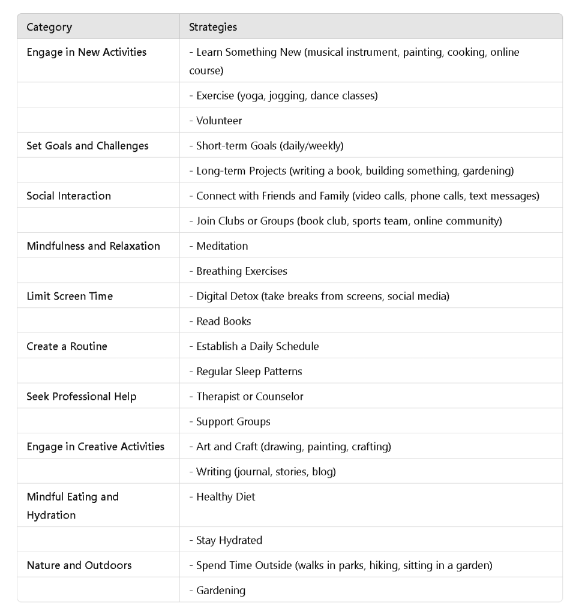

Dealing with boredom and a sense of losing touch
Dealing with boredom and a sense of losing touch with reality can be challenging. Here are several strategies that can help:
1. Engage in New Activities
-
Learn Something New: Pick up a new hobby or skill. This could be anything from learning a musical instrument, painting, cooking new recipes, or taking an online course.
-
Exercise: Physical activity can be a great way to break the monotony and improve mental health. Try yoga, jogging, or even dance classes.
-
Volunteer: Helping others can provide a sense of purpose and fulfillment.
2. Set Goals and Challenges
-
Short-term Goals: Set daily or weekly goals. Achieving these can provide a sense of accomplishment.
-
Long-term Projects: Start a project that requires time and effort. This could be writing a book, building something, or starting a garden.
3. Social Interaction
-
Connect with Friends and Family: Regularly talk to loved ones. Video calls, phone calls, or even text messages can help you stay connected.
-
Join Clubs or Groups: Find clubs or groups that match your interests. This could be a book club, a sports team, or an online community.
4. Mindfulness and Relaxation
-
Meditation: Practicing mindfulness and meditation can help ground you and improve your mental clarity.
-
Breathing Exercises: Simple breathing exercises can reduce anxiety and help you feel more present.
5. Limit Screen Time
-
Digital Detox: Take regular breaks from screens, especially social media. Too much screen time can contribute to feelings of disconnection from reality.
-
Read Books: Reading can be a great way to escape and stimulate your mind without screens.
6. Create a Routine
-
Daily Schedule: Establishing a daily routine can provide structure and a sense of normalcy.
-
Regular Sleep Patterns: Ensure you have consistent sleep patterns. Good sleep is crucial for mental health.
7. Seek Professional Help
-
Therapist or Counselor: If feelings of boredom and disconnection persist, it might be helpful to talk to a mental health professional.
-
Support Groups: Sometimes sharing your experiences with others in similar situations can be beneficial.
8. Engage in Creative Activities
-
Art and Craft: Engage in creative activities like drawing, painting, or crafting. Creativity can be a great outlet for emotions and thoughts.
-
Writing: Keep a journal, write stories, or even start a blog. Writing can help organize your thoughts and feelings.
9. Mindful Eating and Hydration
-
Healthy Diet: Eating a balanced diet can have a significant impact on your mental health.
-
Stay Hydrated: Drink plenty of water throughout the day.
10. Nature and Outdoors
-
Spend Time Outside: Nature has a calming effect. Take walks in parks, go hiking, or simply sit in a garden.
-
Gardening: If possible, start a small garden. It can be a relaxing and rewarding activity.
By incorporating some of these strategies, you can combat boredom and feel more connected to reality. It’s important to find what works best for you and be patient with yourself during this process.

Imported from rifaterdemsahin.com · 2024